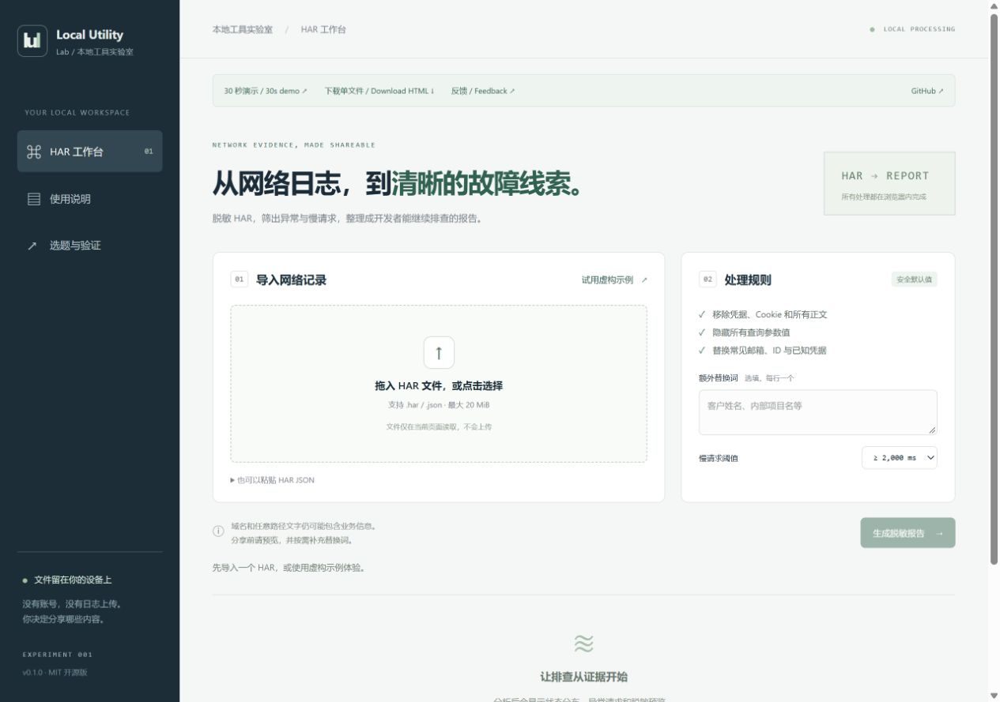

FIVE STEPS · SYNTHETIC DATA ONLY
From a HAR to a shareable evidence brief.
从 HAR 到可以分享的故障线索。
A 30-second screenshot walkthrough. Press play, or move through the five real UI states at your own pace.
30 秒截图演示。点击播放，或逐步查看五个真实页面状态；不会读取你的文件或自动下载。

1. Start with the built-in synthetic HAR. No account needed.
1. 使用内置虚构 HAR 体验，不需要账号或真实日志。
1 / 5 · 00 / 30s
Only fictional example.com requests appear here. The workbench processes HARs locally and makes no model calls. Automatic redaction can miss business details; review exports before sharing.
所有截图仅含虚构 example.com 请求。工作台在浏览器本地处理，不调用模型。自动脱敏可能遗漏业务信息，分享前仍需检查。